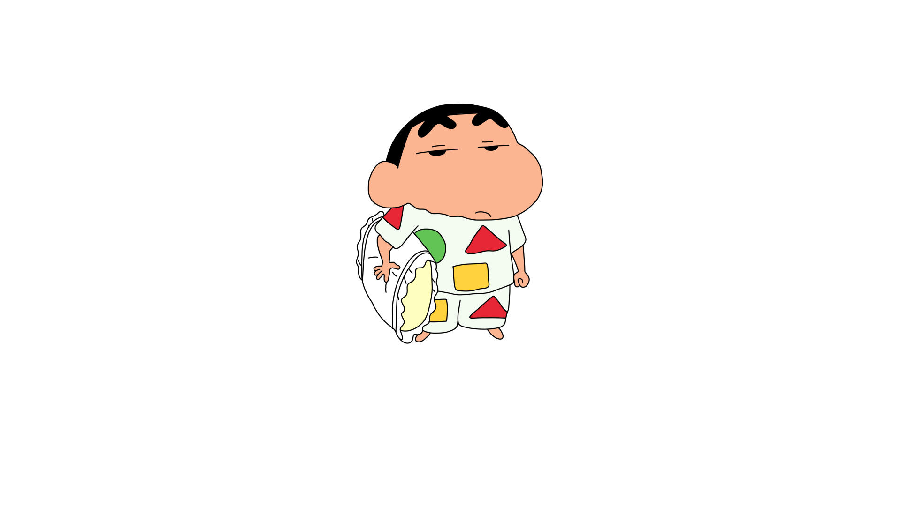

이번에는 단락을 의미하는 태그를 알아보고자 했다. 'br태그'가 있겠지만 그것이 아닌 이번에는 'p태그'를 이용해보고자 한다.
'p태그'는 'br태그'보다 사용하는 빈도 수가 많다고 한다. 하지만 'p태그'는 여러 번을 사용한다고 해서 단락 간의 간격이 넓어지는 것이 아니기에 가독성은 좋지 않다고 한다. 하지만 이번에는 css의 힘을 잠시 빌려서 'p태그'를 사용하더라도 단락 간의 간격을 늘릴 수 있는 방법을 배우고자 한다.
margin은 여백을 의미하며, top은 지금 작성하고 있는 문단의 위쪽 여백을 의미하며, px는 간격의 픽셀 크기를 의미한다. 이를 적용해보면 윗 단락과 45px의 크기만큼 여백이 생기게 되었다는 것을 확인할 수 있다.
이번에는 사진을 한 번 붙여보자.
이번에는 사진과 함께 속성에 대해서 알아보려고 한다. 위에서 사진을 붙여넣기 위해서는 img라는 태그를 붙이고 img라는 태그로는 정보가 부족하기에 source의 줄임말인 src를 통해서 사진을 찾았다. 또한, 웹페이지에 띄우는 크기를 조정하기 위해서는 width라는 속성을 더 추가로 붙였다. 여기서 src와 width는 속성(attribute)라고 지칭하며, 이는 순서에 영향을 받지 않기에 순서를 바꿔 적어도 상관없다.
ㅡㅡㅡㅡㅡㅡㅡㅡㅡㅡㅡㅡㅡㅡㅡㅡㅡㅡㅡㅡㅡㅡㅡㅡㅡㅡㅡㅡㅡㅡㅡㅡㅡㅡㅡㅡㅡㅡㅡ
위에 나와 있듯이 목차는 list의 약자인 li태그를 이용하여 목차를 표현할 수 있다. 그리고 서로 다른 목차끼리 구분하기 위해 존재하는 것이 parent태그이며, li의 부모태그는 'ul태그'임을 알 수 있다.
ul태그에서는 1,2,3 등 숫자를 적어줘야 list up되지만, 만약 어떤 사람이 1번 목차를 지우고 2번 목차부터 1번으로 설정하겠다고 요구했을 때, 우리는 모든 것들을 바꿔줘야한다. 이를 해결하기 위해 있는 태그가 'ol태그'이다.
즉, 이렇게 ul태그가 아닌 ol태그를 사용한다면, 숫자를 붙이지 않더라도 자동으로 숫자가 채워지며, 목차를 추가를 하거나 빼더라도 순서는 자동으로 맞춰지게 된다.여기서 ol의 약자는 ordered list이며, ul의 약자는 unordered list이다.
그 다음으로 배울 내용은 빈도수가 가장 높은 4개의 태그에 대해서 배운다. title태그, head,body태그, meta태그, html태그, doctype 태그가 방금 말한 빈도수가 가장 높은 4개의 태그들이다. 먼저, title태그는 기존의 파일 이름이었던 1.html을 준성이의 HTML로 고쳐주는 역할을 하며, head와 body태그는 title,meta태그와 본문을 구분지어준다. meta태그는 지금 작성하고 있는 파일이 utf-8이므로 내가 만든 브라우저 또한 utf-8로 열어주기 위해 쓰이는 태그이다. 마지막으로 html태그와 doctype태그는 내가 작성하고 있는 문서가 html임을 알려주는 최상위 태그이다.
*charset의 의미는 세트를 의미한다고 한다.
이번에는 하이퍼링크를 사용해보려고 한다. 하이퍼링크는 anchor의 첫글자인 a태그를 사용한다. 하지만 a태그만을 사용하면 정보가 부족하기에 href(hyper text reference)를 덧붙이고 그 뒤에 하이퍼링크를 추가하고자 하는 주소를 넣으면 된다.
또한, 기존의 페이지에서 바뀌는 시스템이 아닌 새로운 태븡로 열리게 만들고 싶다면 뒤에 target-"_blank"를 추가하면 된다. 그리고 만든 하이퍼링크 위에 이동하는 하이퍼링크 주소가 어떤 것인지 pre-view하게 만들고 싶다면 title="원하는 pre-view"를 넣으면 된다.